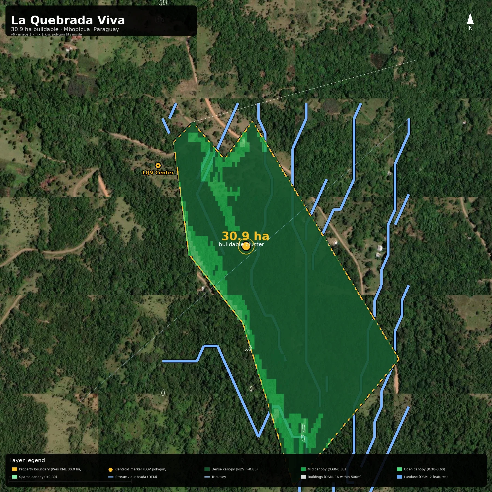
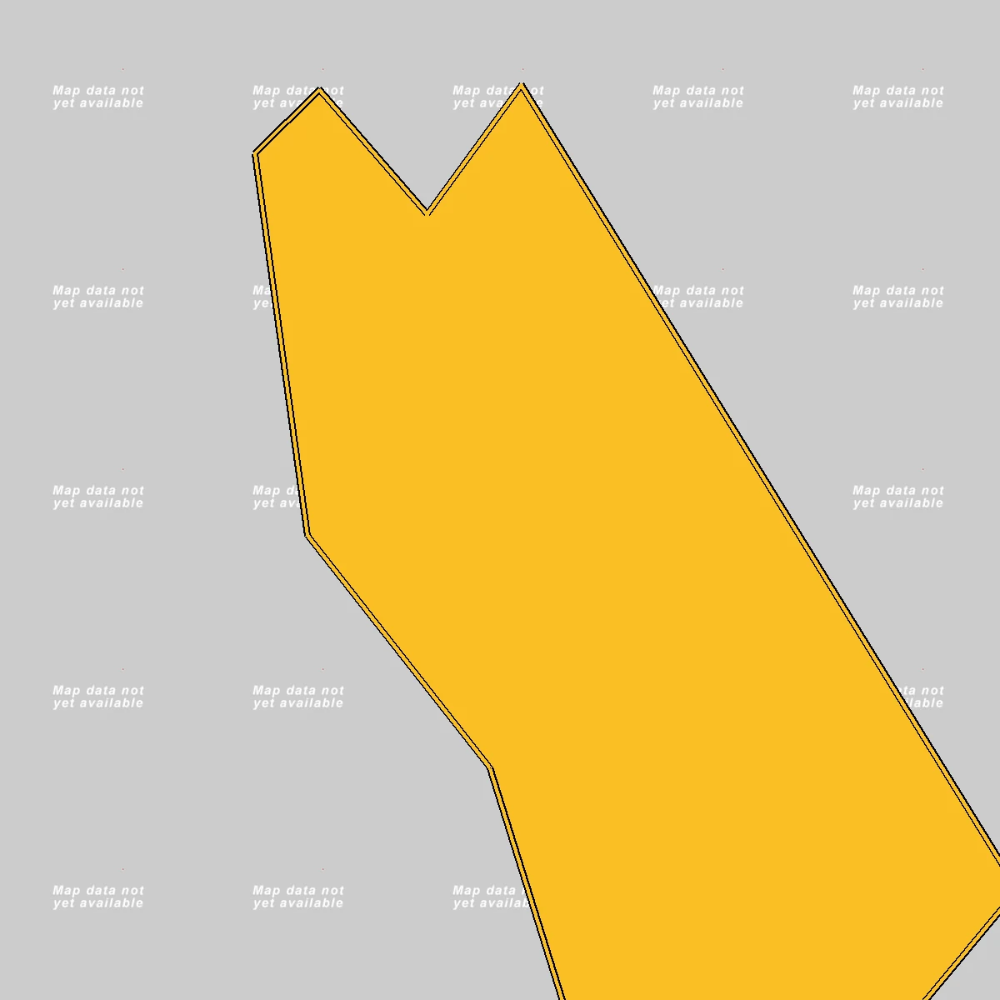
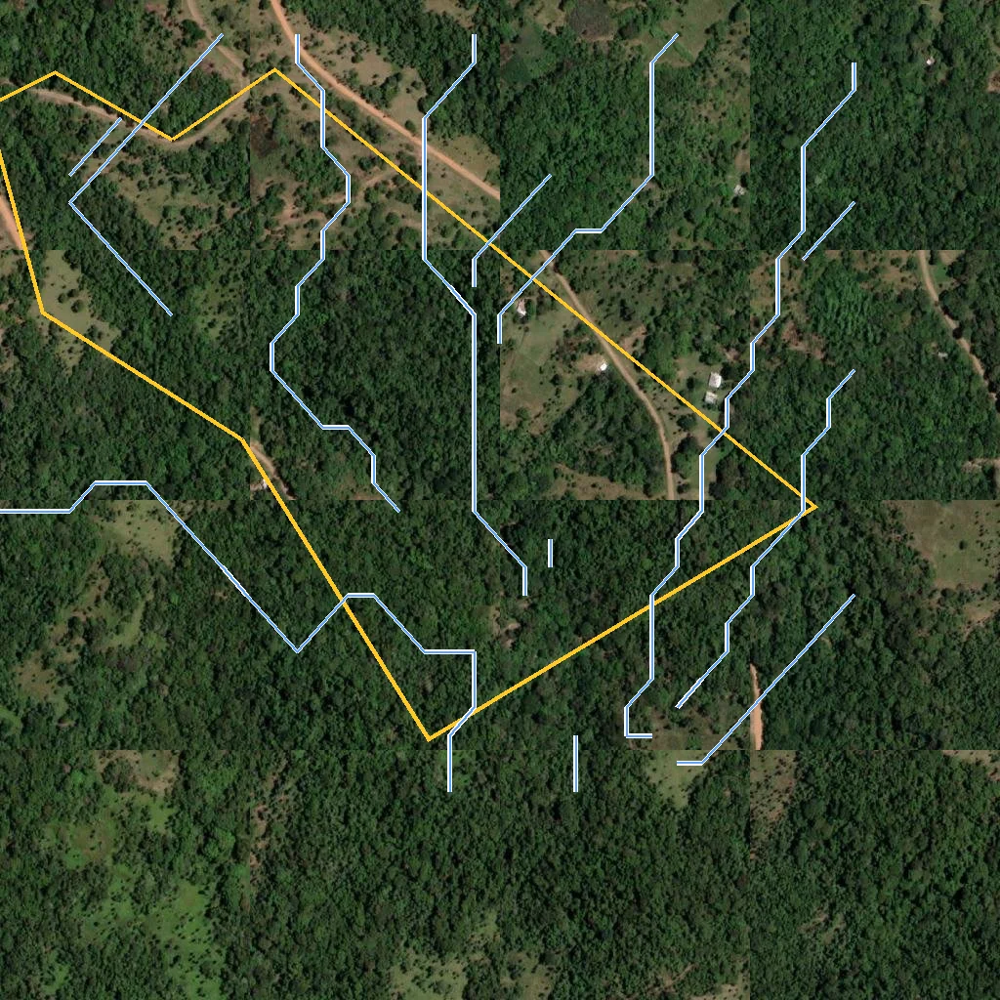
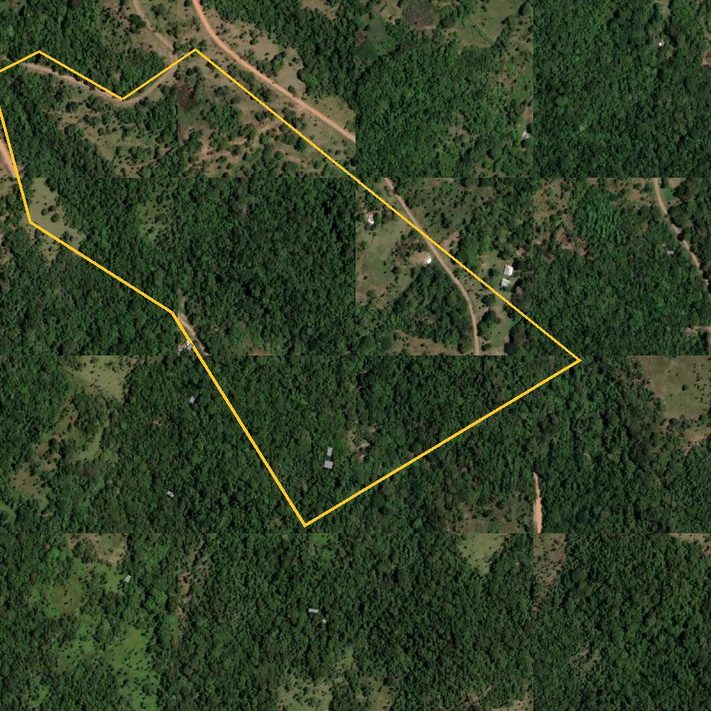
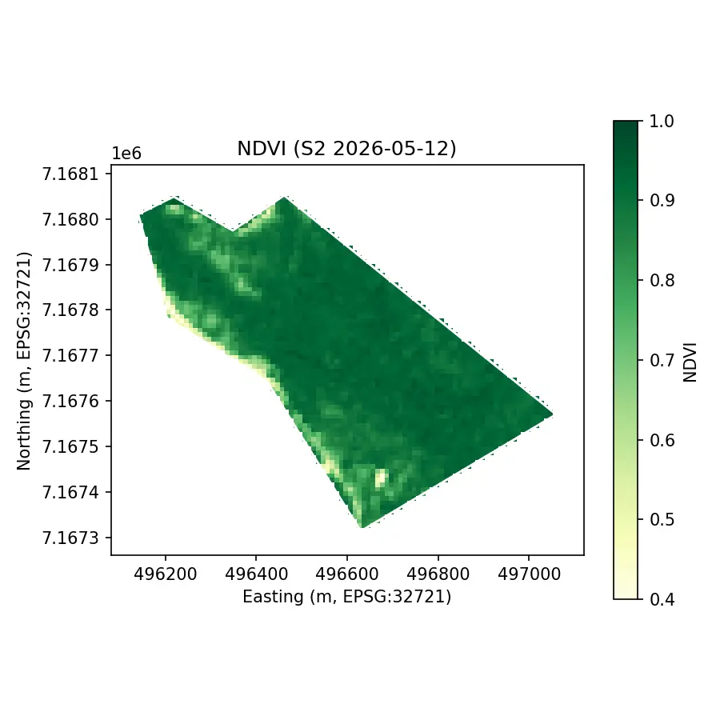
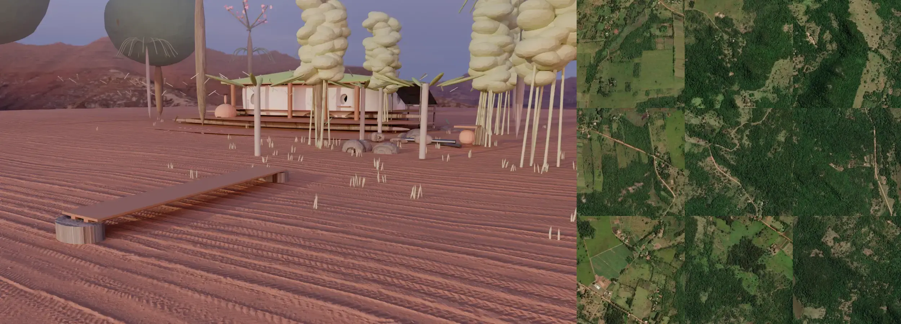
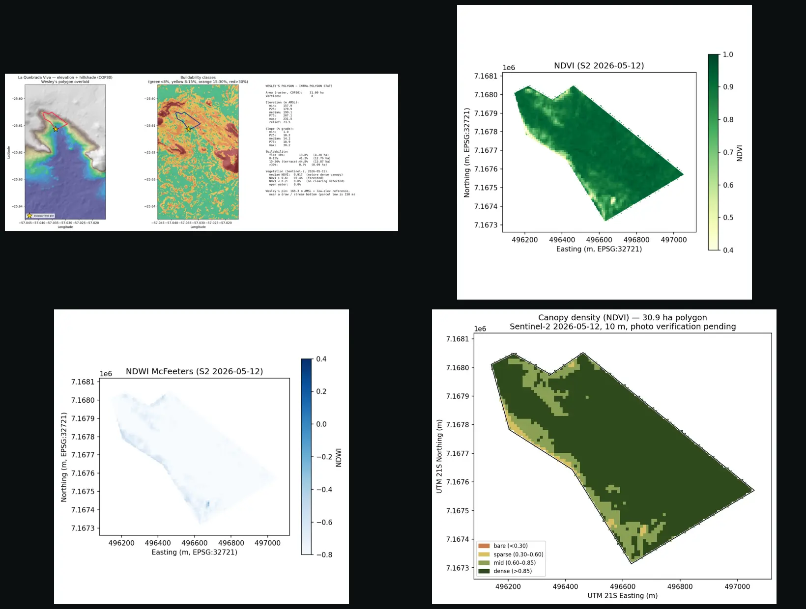

La Quebrada Viva (LQV) is a 30.9-hectare buildable forest-parcel within a 62-hectare property in Mbopicua, Escobar district, Paraguarí, Paraguay. The wider project — working name Riverstone Valley (a 62-ha housing park + wellness + ceremonies + family-anchored community) — is described in detail in docs/HOUSING_PARK_CONCEPT.md. LQV is the first cob/bottle earthen house on the larger site.

Data health all 6 layers verified at the actual LQV centroid
Layers (zoomed to the property)

8 vertices 4 classes
4 classes

DEM-derived
31 features
NDVI NDWI
NDWI
 RGB
300 records
RGB
300 records
Built typologies (Cycles hero renders) 3 HDRI variants · photoreal
 HDRI A
HDRI A
 HDRI B
HDRI B
 HDRI C
HDRI C
Interactive Map (real-time data layers) drag to pan · scroll to zoom
{kind=link}
Open in external apps click to view the property in third-party tools
Rendered vs satellite same property, two different visualizations

Stream network detail 15 DEM-derived segments · labels S01-S15
Data layers side-by-side 1600×400 multi-band quicklook

Explore in 3D Cesium World Terrain + Esri satellite · no key required, 5 GB/mo free tier via Cesium ion
Cesium World Terrain elevation data is streamed at 30 m resolution (SRTM-class). Imagery: Esri World Imagery (default) or OpenStreetMap (toggle). Save data: 5 GB/mo free via Cesium ion — no extra signup beyond this token.
About the wider project
La Quebrada Viva (LQV) is the 30.9-hectare first cob/bottle earthen house on a 62-hectare property in Paraguay. The full project concept is forest park + wellness pool + ceremonies + family-anchored community, with a 4-BV + machinepark structure, phasing toward a 2030 horizon.
For the full vision, see:
- HOUSING_PARK_CONCEPT.md — concept, phasing, open questions
- EUROPEAN_TOURISM_SPEC.md — market, target audience, regulatory
- DREAMLIST_NL.md — 15 idea-domains from Wes's 5 audio recordings (3h 27m, NL)
- RESEARCH_CATALOGUE.md — 137 research items across 14 domains
This page shows the LQV parcel only. The wider 62-ha site is documented in the canonical repo at github.com/Ai-Whisperers/la-quebrada-viva.
What's not in this data
This is a buyer pre-sales visualization built from satellites + open data. Some things are missing or limited by source resolution:
- Individual tree positions: the canopy is shown in 4 density zones (Sentinel-2 NDVI), not as individual trees. Crown-level positions need Wes's phone captures → COLMAP + gsplat pipeline.
- Cadastral (SNC) records: padrones and Anexo I from Wesley are needed for the legal-property overlay.
- Fire history: needs
FIRMS_MAP_KEYfor the NASA FIRMS API; the env-setup script prompts for it. - Drone / Maxar high-res imagery: 30 cm/pixel from Vantor tasking is >$2,800 per 100 km²; over-budget for a pre-sales page.
- Stream connectivity: the 15 DEM-derived stream segments are real but disconnected (D8 flow-accum fragmentation). They look like a tree of tributaries rather than a single main quebrada with branching forks.
- Buildings inside the LQV polygon: only 2 OSM-mapped buildings are inside the property; the other 14 within 500m are scattered rural structures.
For survey-grade, design-grade, or legally-binding data, engage a licensed Paraguayan agrimensor — see docs/_archive/2026-06-1X/UPGRADE_PLAN.md for the SoW.